Personal Details
- Full Name: Weljen P. Sarigumba
- Age:18
- Hometown:Prk. 5 San Vicente, Panabo City, Davao del Norte
Hello, I’m
“It's time to make your Pawn into Queen”
I am a college student who loves computers and technology. I finished Senior High School in the ICT-CSS strand at San Vicente National High School. I enjoy building simple webpages with HTML and CSS, and I am currently learning Java programming. When I am not in front of a computer, I like playing Sepak Takraw. This website shows what I have learned so far.
See My Projects About MeI like making webpages with HTML and CSS and seeing my code turn into a real page.
I am learning Java step by step and practicing how to solve small problems with code.
I enjoy playing Sepak Takraw because it needs teamwork, balance, and good focus.
Keep my grades up and get better at HTML, CSS, and Java this school year.
Build bigger projects on my own and learn more about web development.
Graduate and work in the IT field using the skills I learned in college.
I have beginner-level knowledge of HTML and CSS and have made simple webpages in class. I am also still learning Java programming.
I can do basic troubleshooting, such as checking computer settings and finding common computer problems.
I have basic skills in arranging text, images, colors, and layouts so a design looks neat.
I listen to my classmates, explain my ideas clearly, and talk with them when working on activities.
I cooperate with my group, take responsibility for my part, and help the team finish its work.
"INOM KA OR TUMBA KA"
HOT COFFEE
Minimal Bean.........₱40
Slate & Steam........₱30
Urban Pour...........₱59
Morning Haze.........₱21
Perkatory............₱35
COLD COFFEE
Iced Latte...........₱22
Iced Mocha...........₱32
Iced Macchiat........₱49
Vietnamese Iced Coffee.....₱30
Spanish Latte.........₱37
| Time | monday | tuesday | Wednesday | Thursday | Friday |
|---|---|---|---|---|---|
| 8:00-10:00am | Introduction to Computing | Introduction to Computing | - | - | - |
| 10:00-12:00am | Computer Programming | Computer Programming | - | - | - |
| 12:00-3:00 | - | - | - | - | - |
| 3:00-5:00am | NSTP | NSTP | - | - | - |
| 5:30-7:00pm | Understanding the Self | Understanding to Self | - | - | - |
| 8:00-12:00am | - | - | Physical Education | - | - |
| Code | Subject | Description | Time | Room |
|---|---|---|---|---|
| IT101 | Introduction to Computing | Introduction to Computing is a subject that introduces students to the basic concepts of computers, including their components, functions, hardware, software, and uses. It helps students understand how computers work and how technology is used to solve problems and perform everyday tasks efficiently. |
8:00-10:00 | FV.307 |
| IT102 | Computer Programming | Computer Programming is a subject that teaches students how to write, understand, and develop computer programs using programming languages. It helps develop logical thinking, problem-solving skills, and the ability to create software and applications. |
10:00-12:00 | FV.307 |
| NSTP1 | CWTS | CWTS (Civic Welfare Training Service) is a program that encourages students to participate in activities that promote community welfare, public safety, environmental protection, and social responsibility. It helps develop leadership, discipline, and a sense of service to the community. |
3:00-5:00 | FV.303 |
| GE 3_UTSW/GAD | Understading the Self | Understanding the Self is a subject that helps students learn more about their identity, emotions, thoughts, values, and behavior. It encourages self-awareness, personal growth, and a better understanding of oneself and one's relationships with others. |
5:30-7:00 | FV.206 |
| PE 1 | Physical Education | Physical Education is a subject that promotes physical fitness, healthy living, and an active lifestyle through exercise, sports, and other physical activities. It helps students develop strength, coordination, teamwork, discipline, and sportsmanship. |
8:00-12:00 | Dance Room |
This Portfolio I've made now
Sport Junior/middle school Catergory:
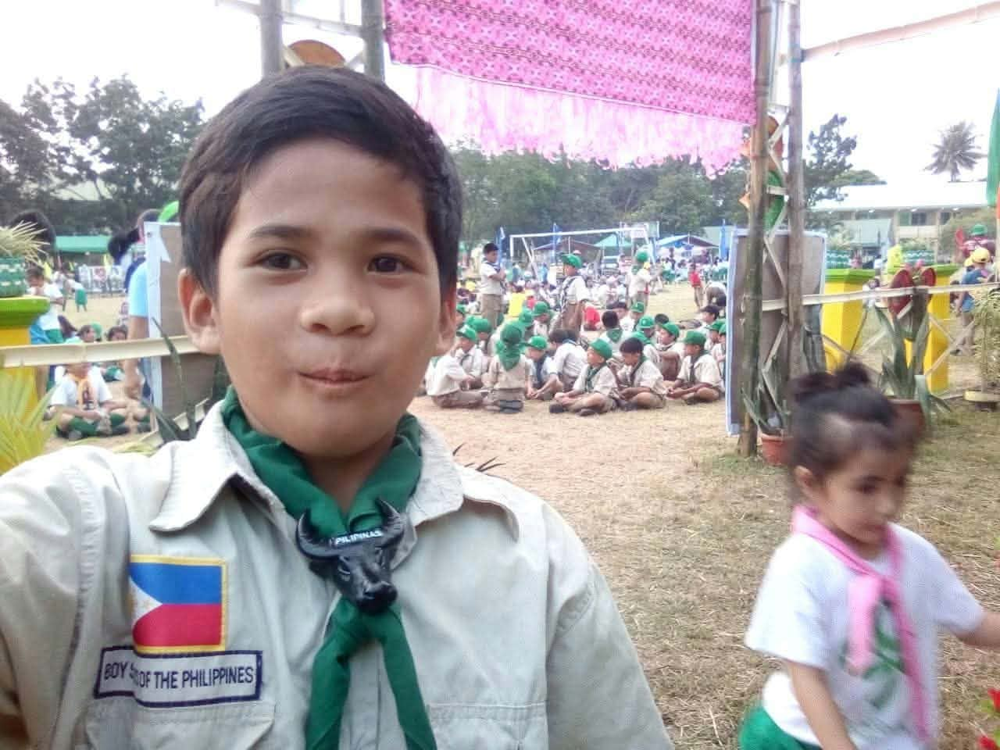
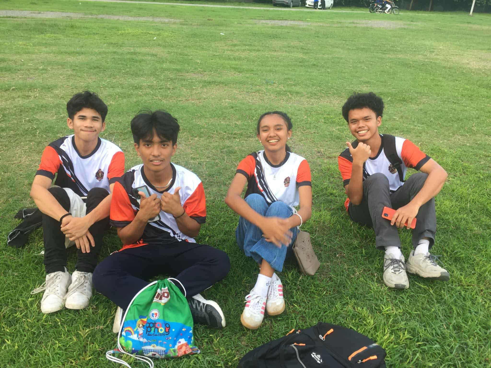
Opening day PCAA
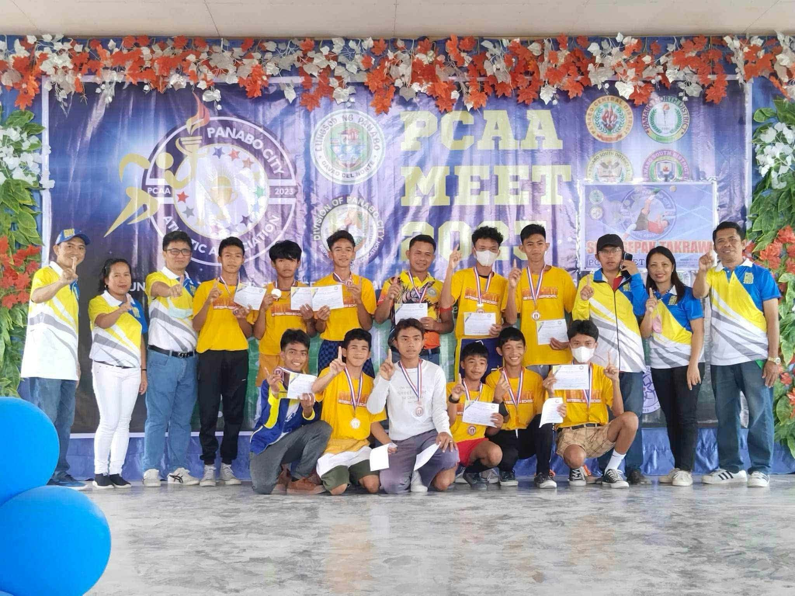
PCAA Meet 2023
Sepak Takraw medal
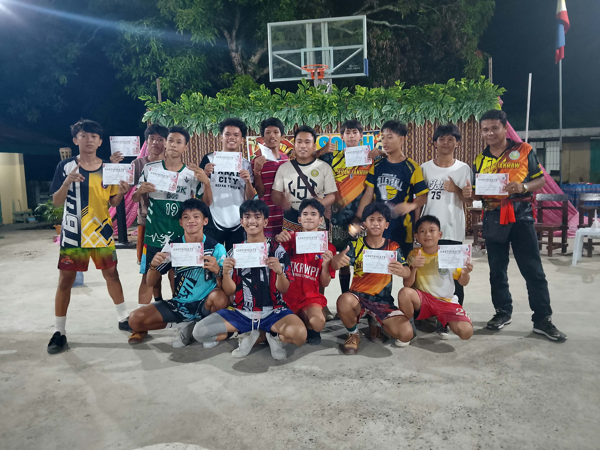
Certificates of Recognition
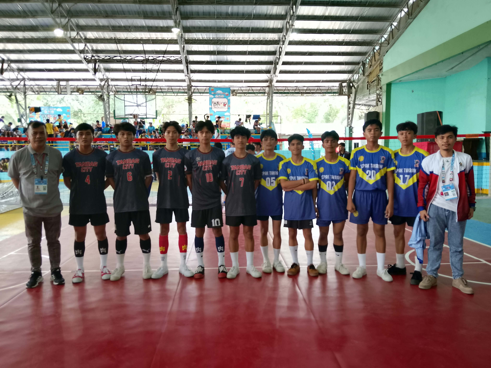
Sepak Takraw game day (Batang Pinoy)
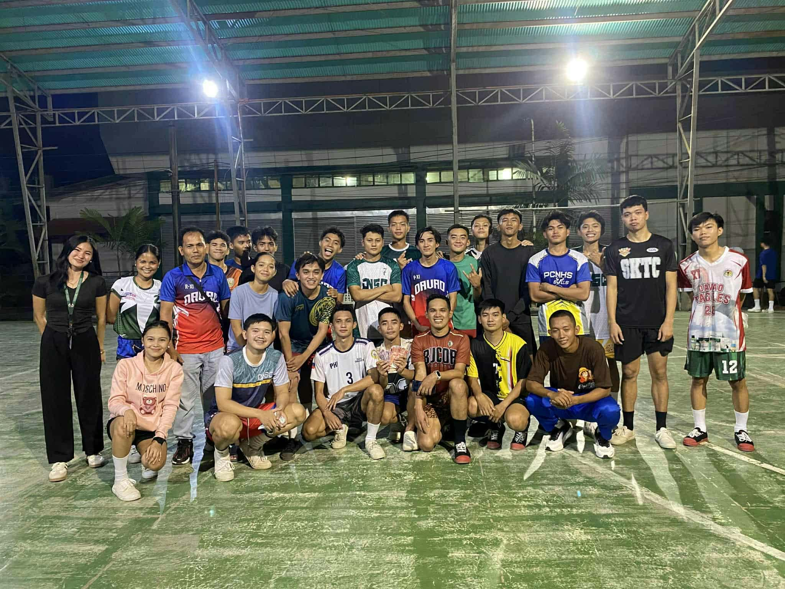
group photo
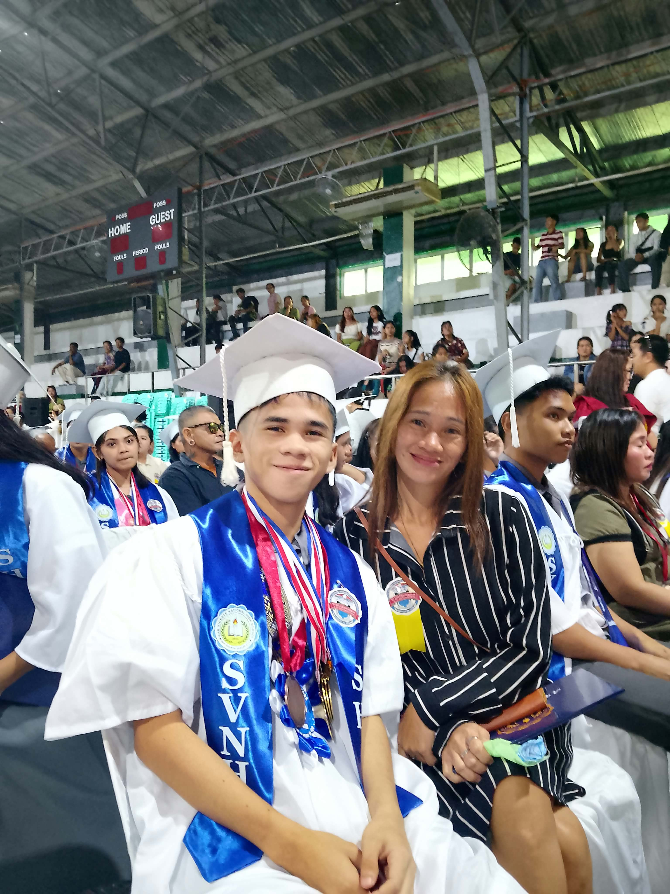
Graduation day

1st Placer

Bronze Medalist
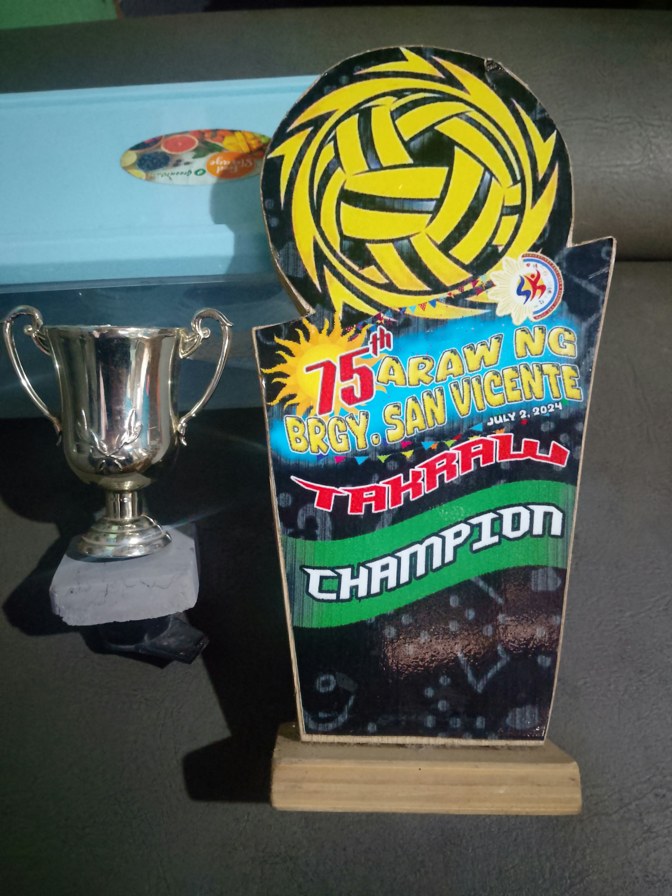
Champion
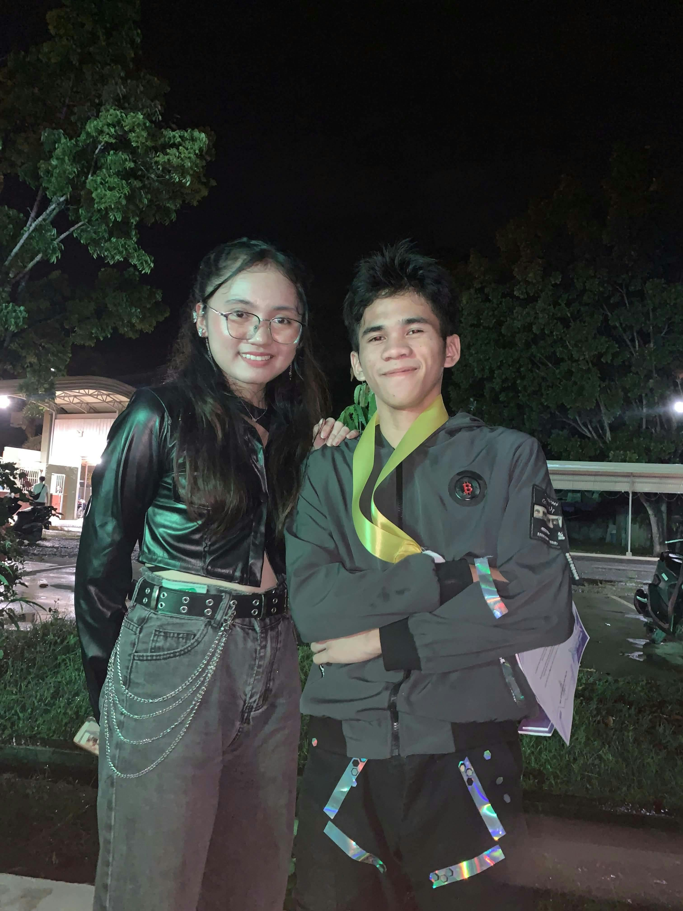
Picture daw
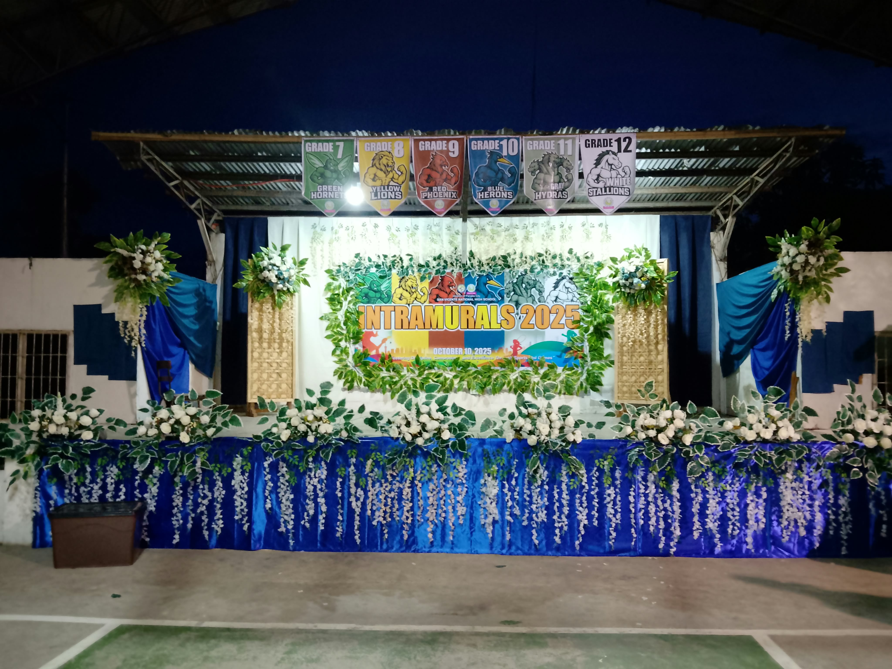
Decoration

Invitational

2nd Placer
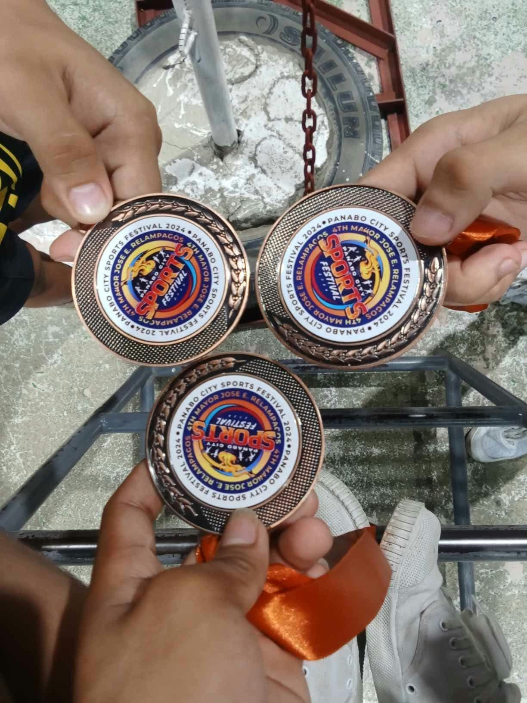
Medal

Spg Officer